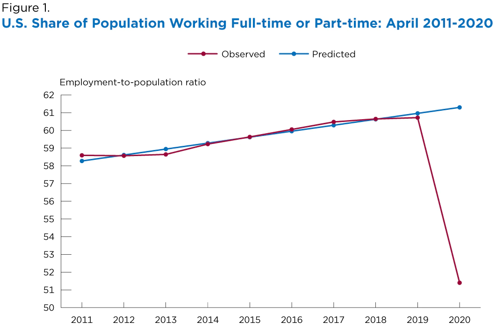
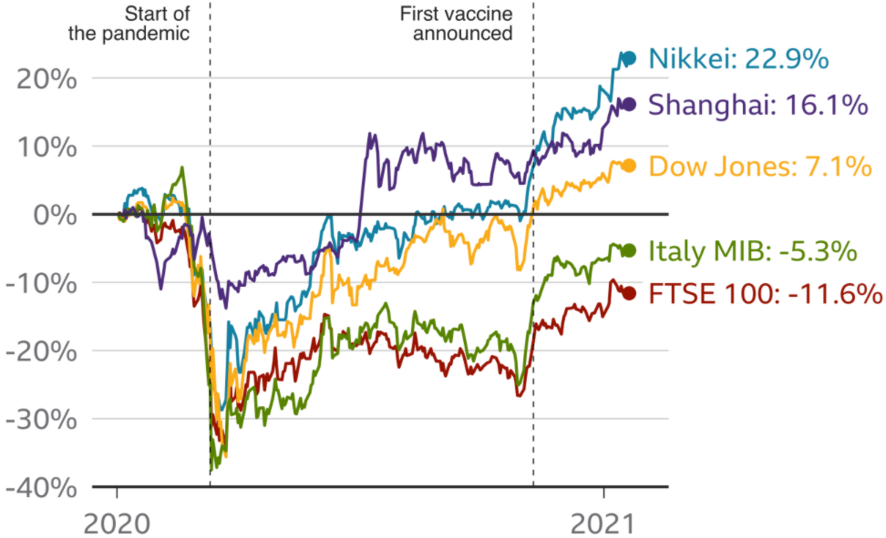

The Covid-19 Pandemic has had many wide ranging effects, from people's health to their communication, everyone was affected one way or another.
Due to the pandemic their have been severe declines in the employment-to-population ratio. 3.3 million americans filed for unemployment insurance the week following March 21, 2020. That record was broken the week after when 6.9 million more people filed for unemployment. According to the U.S. Department of Labor, no previous week in U.S. history had seen more than 695,000 people file for unemployment.
Global oil prices started strong in 2020, averaging $64 per barrel in January 24. However, the pandemic drastically reduced global oil demand as businesses shut down and governments restricted travel. On April 14, 2020, air travel hit a low point of 87,534 travelers compared to 2.2 million that same day the year before. Also in April, oil prices plummeted to $19 per barrel globally and -$37 per barrel in the U.S. Prices then recovered later in the year, but never regained their January high.In December 2020, the U.S. Energy Administration (EIA) predicted oil prices to average $43 per barrel for the year, rising to an average of $49 per barrel in 2021. U.S. prices would be slightly lower due to a greater supply from domestic shale oil production.
In early April 2020, 43% of businesses had temporarily closed. Almost all of the closures were a result of COVID-19, a survey from the Proceedings of the National Academy of Sciences of the United States of America (PNAS) suggested. By September 2020, commercial Chapter 11 bankruptcies—meant to rehabilitate a business through a court-approved reorganization plan—were up 78% over September 2019. The American Bankruptcy Institute expects to see an increase in filings in early 2021, as well, as the pandemic drags on.
The FTSE, Dow Jones Industrial Average and the Nikkei all saw huge falls as the number of Covid-19 cases grew in the first months of the crisis. The major Asian and US stock markets have recovered following the announcement of the first vaccine in November, but the FTSE is still in negative territory. The FTSE dropped 14.3% in 2020, its worst performance since 2008.
Stock Market Crash and Rebound At the start of 2020, the stock market was setting new records, with the Dow Jones Industrial Average (DJIA) reaching a pre-pandemic high of 29,551.42 on Feb. 12, 2020. Soon after the president declared a national emergency, though, panicked investors created the 2020 stock market crash. The three worst single-day point losses in U.S. history occurred in March 2020:
By March 11, the Dow closed at 23,553.22, down 20.3% from the February high. That officially ended the 11-year bull market, which began on March 5, 2009, and took U.S. stocks into a bear market. On Nov. 16, 2020, investors sent the DJIA soaring to a new record high of 29,950.44, most likely buoyed by Moderna’s announcement of a coronavirus vaccine that was almost 95% effective. Eight days later, it broke the milestone of 30,000 points for the first time ever.